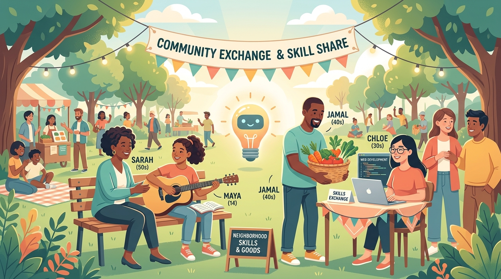
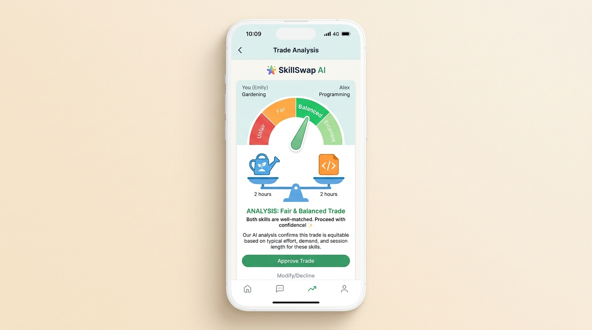
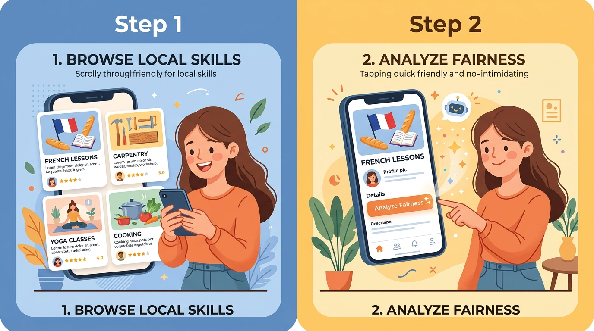
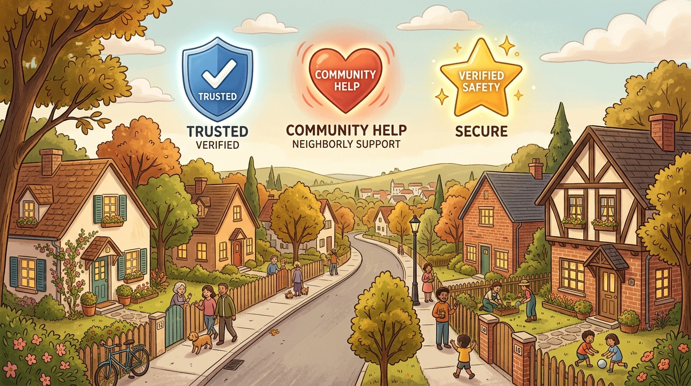

Skill-Barter
Local
How AI is Reviving the
Ancient Art of the Swap
Let's face it: inflation is pinching our pockets, and the cost of everyday services—from home repairs to language tutoring—is skyrocketing. But what if you could bypass money altogether?

Discover how Skill-Barter Local uses a friendly AI referee to take the awkwardness out of trading skills with neighbors. Save money and build community!
Enter Skill-Barter Local, a hyper-local networking application designed to help neighbors trade their talents directly. The platform's rallying cry is simple:
"Trade Skills. Save Money. Build Community."
While bartering is as old as humanity itself, it has always suffered from one major pain point: the sheer awkwardness of negotiating value. How many hours of organic vegetable gardening help equal a Python automation script? Is a custom portrait illustration worth three hours of French tutoring?

The AI Value Matcher™:
Your Friendly, Unbiased Referee
Skill-Barter Local solves this age-old dilemma by introducing a neutral, unbiased referee: an AI Barter Arbitrator powered by Google's smart gemini-3.5-flash model. By taking cash out of the equation and replacing it with an intelligent, friendly value matcher, this app turns stressful negotiations into a fun, collaborative, and highly equitable community experience.
At the heart of Skill-Barter Local is the AI Value Matcher™, a friendly digital referee designed to take the awkwardness out of neighborly trades. When you want to swap services, figuring out a fair deal can feel a bit uncomfortable. That’s where our AI assistant steps in to help.
Instead of focusing on cold, hard cash or strict market prices, the AI looks at the bigger picture. It thinks about things like how much effort a task takes, how long it lasts, and how rare a specific skill might be. For instance, if you offer to swap an hour of basic weeding for an hour of expert computer programming, the AI gently points out the difference in training and specialized skill.
Behind the Scenes:
Simple, Clear Insights
Behind the scenes, this clever AI works like a charm to keep things simple for you. Instead of dumping a massive, confusing wall of text onto your screen, the AI organizes its thoughts into neat, bite-sized pieces of information.

Quick Breakdown
- Fairness Score: 45/100 (A bit lopsided!)
- Suggested Match: 3 hours of Gardening ≈ 1 hour of Coding
- The Why: Coding requires specialized technical skills, while basic gardening is physically demanding but easier to pick up.
- Friendly Tip: To balance things out, try offering 2 more hours of gardening, or ask for a shorter coding session.
Even if the main AI system takes a quick nap, a built-in backup immediately steps in to keep your trade negotiations running smoothly.
A Seamless, Two-Stage User Journey
Users start on a main feed where they can browse local skills, filtering by friendly categories like Manual Labor, Tech, Education, Creative, and Professional. Each listing is displayed as a card showing the skill level.
When you click "Propose Trade," you enter an interactive guide:
The Offer Stage: Define your counter-offer. Clicking "Analyze Fairness" triggers the AI.
The Analysis Stage: Visual breakdown using an intuitive scale:
- 🟢 Emerald Green for highly fair trades (Score 80+)
- 🟡 Amber Yellow for okay trades (Score 60-79)
- 🔴 Rose Red for unfair trades (Score under 60)
Fostering Trust in a
Hyper-Local Ecosystem
For a non-monetary economy to thrive, trust is just as important as fairness. Skill-Barter Local builds this trust through several hyper-local community features. User proximity is displayed in relative terms (such as "0.5 miles away") to maintain privacy.

Verified ID
To confirm identity and build safety within the neighborhood network.
Community Helper
For active participants who consistently love to pitch in and assist others.
Top Rated
For consistently excellent, reliable feedback from your neighbors.